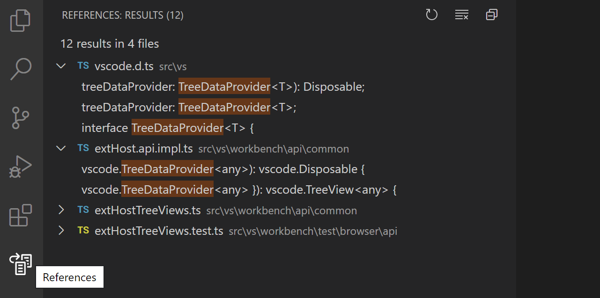
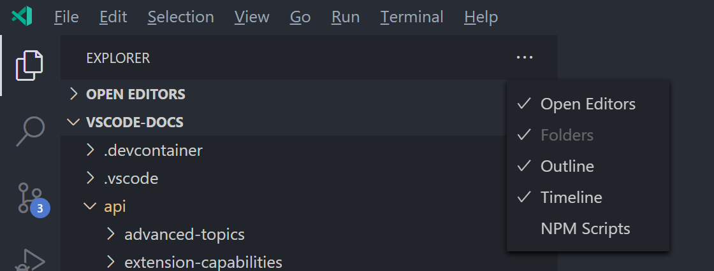

Tree View API
The Tree View API allows extensions to show content in the sidebar in Visual Studio Code. This content is structured as a tree and conforms to the style of the built-in views of VS Code.
For example, the built-in References Search View extension shows reference search results as a separate view.

The Find All References results are displayed in a References: Results Tree View, which is in the References View Container.
This guide teaches you how to write an extension that contributes Tree Views and View Containers to Visual Studio Code.
Tree View API Basics
To explain the Tree View API, we are going to build a sample extension called Node Dependencies. This extension will use a treeview to display all Node.js dependencies in the current folder. The steps for adding a treeview are to contribute the treeview in your package.json, create a TreeDataProvider, and register the TreeDataProvider. You can find the complete source code of this sample extension in the tree-view-sample in the vscode-extension-samples GitHub repository.
package.json Contribution
First you have to let VS Code know that you are contributing a view, using the contributes.views Contribution Point in package.json.
Here's the package.json for the first version of our extension:
{
"name": "custom-view-samples",
"displayName": "Custom view Samples",
"description": "Samples for VS Code's view API",
"version": "0.0.1",
"publisher": "alexr00",
"engines": {
"vscode": "^1.74.0"
},
"activationEvents": [],
"main": "./out/extension.js",
"contributes": {
"views": {
"explorer": [
{
"id": "nodeDependencies",
"name": "Node Dependencies"
}
]
}
},
"scripts": {
"vscode:prepublish": "npm run compile",
"compile": "tsc -p ./",
"watch": "tsc -watch -p ./"
},
"devDependencies": {
"@types/node": "^10.12.21",
"@types/vscode": "^1.42.0",
"typescript": "^3.5.1",
"tslint": "^5.12.1"
}
}
Note: If your extension targets a VS Code version prior to 1.74, you must explicitly list
onView:nodeDependenciesinactivationEvents.
You must specify an identifier and name for the view, and you can contribute to following locations:
explorer: Explorer view in the Side Bardebug: Run and Debug view in the Side Barscm: Source Control view in the Side Bartest: Test explorer view in the Side Bar- Custom View Containers
Tree Data Provider
The second step is to provide data to the view you registered so that VS Code can display the data in the view. To do so, you should first implement the TreeDataProvider. Our TreeDataProvider will provide node dependencies data, but you can have a data provider that provides other types of data.
There are two necessary methods in this API that you need to implement:
getChildren(element?: T): ProviderResult<T[]>- Implement this to return the children for the givenelementor root (if no element is passed).getTreeItem(element: T): TreeItem | Thenable<TreeItem>- Implement this to return the UI representation (TreeItem) of the element that gets displayed in the view.
When the user opens the Tree View, the getChildren method will be called without an element. From there, your TreeDataProvider should return your top-level tree items. In our example, the collapsibleState of the top-level tree items is TreeItemCollapsibleState.Collapsed, meaning that the top-level tree items will show as collapsed. Setting the collapsibleState to TreeItemCollapsibleState.Expanded will cause tree items to show as expanded. Leaving the collapsibleState as its default of TreeItemCollapsibleState.None indicates that the tree item has no children. getChildren will not be called for tree items with a collapsibleState of TreeItemCollapsibleState.None.
Here is an example of a TreeDataProvider implementation that provides node dependencies data:
import * as vscode from 'vscode';
import * as fs from 'fs';
import * as path from 'path';
export class NodeDependenciesProvider implements vscode.TreeDataProvider<Dependency> {
constructor(private workspaceRoot: string) {}
getTreeItem(element: Dependency): vscode.TreeItem {
return element;
}
getChildren(element?: Dependency): Thenable<Dependency[]> {
if (!this.workspaceRoot) {
vscode.window.showInformationMessage('No dependency in empty workspace');
return Promise.resolve([]);
}
if (element) {
return Promise.resolve(
this.getDepsInPackageJson(
path.join(this.workspaceRoot, 'node_modules', element.label, 'package.json')
)
);
} else {
const packageJsonPath = path.join(this.workspaceRoot, 'package.json');
if (this.pathExists(packageJsonPath)) {
return Promise.resolve(this.getDepsInPackageJson(packageJsonPath));
} else {
vscode.window.showInformationMessage('Workspace has no package.json');
return Promise.resolve([]);
}
}
}
/**
* Given the path to package.json, read all its dependencies and devDependencies.
*/
private getDepsInPackageJson(packageJsonPath: string): Dependency[] {
if (this.pathExists(packageJsonPath)) {
const packageJson = JSON.parse(fs.readFileSync(packageJsonPath, 'utf-8'));
const toDep = (moduleName: string, version: string): Dependency => {
if (this.pathExists(path.join(this.workspaceRoot, 'node_modules', moduleName))) {
return new Dependency(
moduleName,
version,
vscode.TreeItemCollapsibleState.Collapsed
);
} else {
return new Dependency(moduleName, version, vscode.TreeItemCollapsibleState.None);
}
};
const deps = packageJson.dependencies
? Object.keys(packageJson.dependencies).map(dep =>
toDep(dep, packageJson.dependencies[dep])
)
: [];
const devDeps = packageJson.devDependencies
? Object.keys(packageJson.devDependencies).map(dep =>
toDep(dep, packageJson.devDependencies[dep])
)
: [];
return deps.concat(devDeps);
} else {
return [];
}
}
private pathExists(p: string): boolean {
try {
fs.accessSync(p);
} catch (err) {
return false;
}
return true;
}
}
class Dependency extends vscode.TreeItem {
constructor(
public readonly label: string,
private version: string,
public readonly collapsibleState: vscode.TreeItemCollapsibleState
) {
super(label, collapsibleState);
this.tooltip = `${this.label}-${this.version}`;
this.description = this.version;
}
iconPath = {
light: path.join(__filename, '..', '..', 'resources', 'light', 'dependency.svg'),
dark: path.join(__filename, '..', '..', 'resources', 'dark', 'dependency.svg')
};
}
Registering the TreeDataProvider
The third step is to register the above data provider to your view.
This can be done in the following two ways:
-
vscode.window.registerTreeDataProvider- Register the tree data provider by providing the registered view ID and above data provider.const rootPath = vscode.workspace.workspaceFolders && vscode.workspace.workspaceFolders.length > 0 ? vscode.workspace.workspaceFolders[0].uri.fsPath : undefined; vscode.window.registerTreeDataProvider( 'nodeDependencies', new NodeDependenciesProvider(rootPath) ); -
vscode.window.createTreeView- Create the Tree View by providing the registered view ID and above data provider. This will give access to the TreeView, which you can use for performing other view operations. UsecreateTreeView, if you need theTreeViewAPI.vscode.window.createTreeView('nodeDependencies', { treeDataProvider: new NodeDependenciesProvider(rootPath) });
Here's the extension in action:

Updating Tree View content
Our node dependencies view is simple, and once the data is shown, it isn't updated. However, it would be useful to have a refresh button in the view and update the node dependencies view with the current contents of the package.json. To do this, we can use the onDidChangeTreeData event.
onDidChangeTreeData?: Event<T | undefined | null | void>- Implement this if your tree data can change and you want to update the treeview.
Add the following to your NodeDependenciesProvider.
private _onDidChangeTreeData: vscode.EventEmitter<Dependency | undefined | null | void> = new vscode.EventEmitter<Dependency | undefined | null | void>();
readonly onDidChangeTreeData: vscode.Event<Dependency | undefined | null | void> = this._onDidChangeTreeData.event;
refresh(): void {
this._onDidChangeTreeData.fire();
}
Now we have a refresh method, but no one is calling it. We can add a command to call refresh.
In the contributes section of your package.json, add:
"commands": [
{
"command": "nodeDependencies.refreshEntry",
"title": "Refresh",
"icon": {
"light": "resources/light/refresh.svg",
"dark": "resources/dark/refresh.svg"
}
},
]
And register the command in your extension activation:
import * as vscode from 'vscode';
import { NodeDependenciesProvider } from './nodeDependencies';
export function activate(context: vscode.ExtensionContext) {
const rootPath =
vscode.workspace.workspaceFolders && vscode.workspace.workspaceFolders.length > 0
? vscode.workspace.workspaceFolders[0].uri.fsPath
: undefined;
const nodeDependenciesProvider = new NodeDependenciesProvider(rootPath);
vscode.window.registerTreeDataProvider('nodeDependencies', nodeDependenciesProvider);
vscode.commands.registerCommand('nodeDependencies.refreshEntry', () =>
nodeDependenciesProvider.refresh()
);
}
Now we have a command that will refresh the node dependencies view, but a button on the view would be even better. We already added an icon to the command, so it will show up with that icon when we add it to the view.
In the contributes section of your package.json, add:
"menus": {
"view/title": [
{
"command": "nodeDependencies.refreshEntry",
"when": "view == nodeDependencies",
"group": "navigation"
},
]
}
Activation
It is important that your extension is activated only when user needs the functionality that your extension provides. In this case, you should consider activating your extension only when the user starts using the view. VS Code automatically does this for you when your extension declares a view contribution. VS Code emits an activationEvent onView:${viewId} (onView:nodeDependencies for the example above) when the user opens the view.
Note: For VS Code versions prior to 1.74.0, you must explicitly register this activation event in
package.jsonfor VS Code to activate your extension on this view:"activationEvents": [ "onView:nodeDependencies", ],
View Container
A View Container contains a list of views that are displayed in the Activity Bar or Panel along with the built-in View Containers. Examples of built-in View Containers are Source Control and Explorer.

To contribute a View Container, you should first register it using contributes.viewsContainers Contribution Point in package.json.
You have to specify the following required fields:
id- The name of the new view container you're creating.title- The name that will show up at the top of the view container.icon- An image that will be displayed for the view container when in the Activity Bar.
"contributes": {
"viewsContainers": {
"activitybar": [
{
"id": "package-explorer",
"title": "Package Explorer",
"icon": "media/dep.svg"
}
]
}
}
Alternatively, you could contribute this view to the panel by placing it under the panel node.
"contributes": {
"viewsContainers": {
"panel": [
{
"id": "package-explorer",
"title": "Package Explorer",
"icon": "media/dep.svg"
}
]
}
}
Contributing views to View Containers
Once you've created a View Container, you can use the contributes.views Contribution Point in package.json.
"contributes": {
"views": {
"package-explorer": [
{
"id": "nodeDependencies",
"name": "Node Dependencies",
"icon": "media/dep.svg",
"contextualTitle": "Package Explorer"
}
]
}
}
A view can also have an optional visibility property which can be set to visible, collapsed, or hidden. This property is only respected by VS Code the first time a workspace is opened with this view. After that, the visibility is set to whatever the user has chosen. If you have a view container with many views, or if your view will not be useful to every user of your extension, consider setting the view the collapsed or hidden. A hidden view will appear in the view containers "Views" menu:

View Actions
Actions are available as inline icons on your individual tree items, in tree item context menus, and at the top of your view in the view title. Actions are commands that you set to show up in these locations by adding contributions to your package.json.
To contribute to these three places, you can use the following menu contribution points in your package.json:
view/title- Location to show actions in the view title. Primary or inline actions use"group": "navigation"and rest are secondary actions, which are in...menu.view/item/context- Location to show actions for the tree item. Inline actions use"group": "inline"and rest are secondary actions, which are in...menu.
You can control the visibility of these actions using a when clause.

Examples:
"contributes": {
"commands": [
{
"command": "nodeDependencies.refreshEntry",
"title": "Refresh",
"icon": {
"light": "resources/light/refresh.svg",
"dark": "resources/dark/refresh.svg"
}
},
{
"command": "nodeDependencies.addEntry",
"title": "Add"
},
{
"command": "nodeDependencies.editEntry",
"title": "Edit",
"icon": {
"light": "resources/light/edit.svg",
"dark": "resources/dark/edit.svg"
}
},
{
"command": "nodeDependencies.deleteEntry",
"title": "Delete"
}
],
"menus": {
"view/title": [
{
"command": "nodeDependencies.refreshEntry",
"when": "view == nodeDependencies",
"group": "navigation"
},
{
"command": "nodeDependencies.addEntry",
"when": "view == nodeDependencies"
}
],
"view/item/context": [
{
"command": "nodeDependencies.editEntry",
"when": "view == nodeDependencies && viewItem == dependency",
"group": "inline"
},
{
"command": "nodeDependencies.deleteEntry",
"when": "view == nodeDependencies && viewItem == dependency"
}
]
}
}
Note: If you want to show an action for specific tree items, you can do so by defining the context of a tree item using TreeItem.contextValue and you can specify the context value for key viewItem in when expression.
Examples:
"contributes": {
"menus": {
"view/item/context": [
{
"command": "nodeDependencies.deleteEntry",
"when": "view == nodeDependencies && viewItem == dependency"
}
]
}
}
Welcome content
If your view can be empty, or if you want to add Welcome content to another extension's empty view, you can contribute viewsWelcome content. An empty view is a view that has no TreeView.message and an empty tree.
"contributes": {
"viewsWelcome": [
{
"view": "nodeDependencies",
"contents": "No node dependencies found [learn more](https://www.npmjs.com/).\n[Add Dependency](command:nodeDependencies.addEntry)"
}
]
}
Links are supported in Welcome content. By convention, a link on a line by itself is a button. Each Welcome content can also contain a when clause. For more examples, see the built-in Git extension.
TreeDataProvider
Extension writers should register a TreeDataProvider programmatically to populate data in the view.
vscode.window.registerTreeDataProvider('nodeDependencies', new DepNodeProvider());
See nodeDependencies.ts in the tree-view-sample for the implementation.
TreeView
If you would like to perform some UI operations on the view programmatically, you can use window.createTreeView instead of window.registerTreeDataProvider. This will give access to the view, which you can use for performing view operations.
vscode.window.createTreeView('ftpExplorer', {
treeDataProvider: new FtpTreeDataProvider()
});
See ftpExplorer.ts in the tree-view-sample for the implementation.